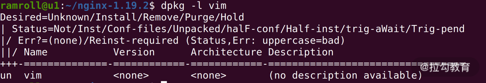
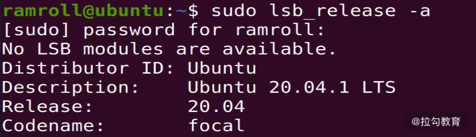
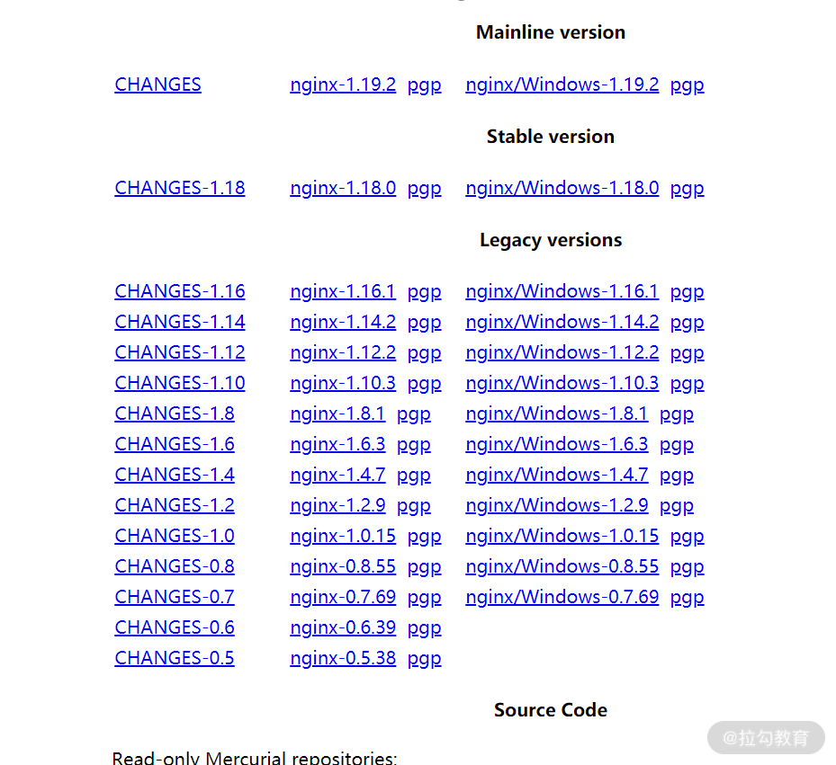

- 00 开篇词 为什么大厂面试必考操作系统？.md.html
- 00 课前必读 构建知识体系，可以这样做！.md.html
- 01 计算机是什么：“如何把程序写好”这个问题是可计算的吗？.md.html
- 02 程序的执行：相比 32 位，64 位的优势是什么？（上）.md.html
- 03 程序的执行：相比 32 位，64 位的优势是什么？（下）.md.html
- 04 构造复杂的程序：将一个递归函数转成非递归函数的通用方法.md.html
- 05 存储器分级：L1 Cache 比内存和 SSD 快多少倍？.md.html
- 05 (1) 加餐 练习题详解（一）.md.html
- 06 目录结构和文件管理指令：rm -rf 指令的作用是？.md.html
- 07 进程、重定向和管道指令：xargs 指令的作用是？.md.html
- 08 用户和权限管理指令： 请简述 Linux 权限划分的原则？.md.html
- 09 Linux 中的网络指令：如何查看一个域名有哪些 NS 记录？.md.html
- 10 软件的安装： 编译安装和包管理器安装有什么优势和劣势？.md.html
- 11 高级技巧之日志分析：利用 Linux 指令分析 Web 日志.md.html
- 12 高级技巧之集群部署：利用 Linux 指令同时在多台机器部署程序.md.html
- 12 (1)加餐 练习题详解（二）.md.html
- 13 操作系统内核：Linux 内核和 Windows 内核有什么区别？.md.html
- 14 用户态和内核态：用户态线程和内核态线程有什么区别？.md.html
- 15 中断和中断向量：Javajs 等语言为什么可以捕获到键盘输入？.md.html
- 16 WinMacUnixLinux 的区别和联系：为什么 Debian 漏洞排名第一还这么多人用？.md.html
- 16 (1)加餐 练习题详解（三）.md.html
- 17 进程和线程：进程的开销比线程大在了哪里？.md.html
- 18 锁、信号量和分布式锁：如何控制同一时间只有 2 个线程运行？.md.html
- 19 乐观锁、区块链：除了上锁还有哪些并发控制方法？.md.html
- 20 线程的调度：线程调度都有哪些方法？.md.html
- 21 哲学家就餐问题：什么情况下会触发饥饿和死锁？.md.html
- 22 进程间通信： 进程间通信都有哪些方法？.md.html
- 23 分析服务的特性：我的服务应该开多少个进程、多少个线程？.md.html
- 23 (1)加餐 练习题详解（四）.md.html
- 24 虚拟内存 ：一个程序最多能使用多少内存？.md.html
- 25 内存管理单元： 什么情况下使用大内存分页？.md.html
- 26 缓存置换算法： LRU 用什么数据结构实现更合理？.md.html
- 27 内存回收上篇：如何解决内存的循环引用问题？.md.html
- 28 内存回收下篇：三色标记-清除算法是怎么回事？.md.html
- 28 (1)加餐 练习题详解（五）.md.html
- 29 Linux 下的各个目录有什么作用？.md.html
- 30 文件系统的底层实现：FAT、NTFS 和 Ext3 有什么区别？.md.html
- 31 数据库文件系统实例：MySQL 中 B 树和 B+ 树有什么区别？.md.html
- 32 HDFS 介绍：分布式文件系统是怎么回事？.md.html
- 32 (1)加餐 练习题详解（六）.md.html
- 33 互联网协议群（TCPIP）：多路复用是怎么回事？.md.html
- 34 UDP 协议：UDP 和 TCP 相比快在哪里？.md.html
- 35 Linux 的 IO 模式：selectpollepoll 有什么区别？.md.html
- 36 公私钥体系和网络安全：什么是中间人攻击？.md.html
- 36 (1)加餐 练习题详解（七）.md.html
- 37 虚拟化技术介绍：VMware 和 Docker 的区别？.md.html
- 38 容器编排技术：如何利用 K8s 和 Docker Swarm 管理微服务？.md.html
- 39 Linux 架构优秀在哪里.md.html
- 40 商业操作系统：电商操作系统是不是一个噱头？.md.html
- 40 (1)加餐 练习题详解（八）.md.html
- 41 结束语 论程序员的发展——信仰、选择和博弈.md.html
- 捐赠
10 软件的安装： 编译安装和包管理器安装有什么优势和劣势？
今天给你带来的面试题是：编译安装和包管理器安装有什么优势和劣势？为了搞清楚这个问题，就引出了今天的话题，在 Linux 上如何安装程序。
在 Linux 上安装程序大概有 2 种思路：
- 直接编译源代码；
- 使用包管理器。
受开源运动影响，Linux 上很多软件都可以拿到源代码，这也是 Linux 能取得成功的一个重要原因。接下来我们先尝试用包管理器安装应用，然后再用一个实战的例子，教你如何编译安装nginx。
包管理器使用
Linux 下的应用程序多数以软件包的形式发布，用户拿到对应的包之后，使用包管理器进行安装。说到包管理器，就要提到dpkg和rpm。
我们先说说包。 Linux 下两大主流的包就是rpm和dpkg。
dpkg（debian package），是linux一个主流的社区分支开发出来的。社区就是开源社区，有很多世界顶级的程序员会在社区贡献代码，比如 github。一般衍生于debian的 Linux 版本都支持dpkg，比如ubuntu。
rpm（redhatpackage manager）。在正式讲解之前，我们先来聊聊 RedHat 这家公司。
RedHat 是一个做 Linux 的公司，你可以把它理解成一家“保险公司”。 很多公司购买红帽的服务，是为了给自己的业务上一个保险。以防万一哪天公司内部搞不定 Linux 底层，或者底层有 Bug，再或者底层不适合当下的业务发展，需要修改等问题，红帽的工程师都可以帮企业解决。
再比如，RedHat 收购了JBoss，把 JBoss 改名为 WildFly。 像 WildFly 这种工具更多是面向企业级，比如没有大量研发团队的企业会更倾向使用成熟的技术。RedHat 公司也有自己的 Linux，就叫作 RedHat。RedHat 系比较重要的 Linux 有 RedHat/Fedora 等。
无论是dpkg还是rpm都抽象了自己的包格式，就是以.dpkg或者.rpm结尾的文件。
dpkg和rpm也都提供了类似的能力：
- 查询是否已经安装了某个软件包；
- 查询目前安装了什么软件包；
- 给定一个软件包，进行安装；
- 删除一个安装好的软件包。
关于dpkg和rpm的具体用法，你可以用man进行学习。接下来我们聊聊yum和apt。
自动依赖管理
Linux 是一个开源生态，因此工具非常多。工具在给用户使用之前，需要先打成dpkg或者rpm包。 有的时候一个包会依赖很多其他的包，而dpkg和rpm不会对这种情况进行管理，有时候为了装一个包需要先装十几个依赖的包，过程非常艰辛！因此现在多数情况都在用yum和apt。
yum
你可能会说，我不用yum也不用apt，我只用docker。首先给你一个连击 666，然后我还是要告诉你，如果你做docker镜像，那么还是要用到yum和apt，因此还是有必要学一下。
yum的全名是 Yellodog Updator，Modified。 看名字就知道它是基于Yellodog Updator这款软件修改而来的一个工具。yum是 Python 开发的，提供的是rpm包，因此只有redhat系的 Linux，比如 Fedora，Centos 支持yum。yum的主要能力就是帮你解决下载和依赖两个问题。
下载之所以是问题，是因为 Linux 生态非常庞大，有时候用户不知道该去哪里下载一款工具。比如用户想安装vim，只需要输入sudo yum install vim就可以安装了。yum的服务器收集了很多linux软件，因此yum会帮助用户找到vim的包。
另一方面，yum帮助用户解决了很多依赖，比如用户安装一个软件依赖了 10 个其他的软件，yum会把这 11 个软件一次性的装好。
关于yum的具体用法，你可以使用man工具进行学习。
apt
接下来我们来重点说说apt，然后再一起尝试使用。因为我这次是用ubuntuLinux 给你教学，所以我以 apt 为例子，yum 的用法是差不多的，你可以自己 man 一下。
apt全名是 Advanced Packaging Tools，是一个debian及其衍生 Linux 系统下的包管理器。由于advanced（先进）是相对于dpkg而言的，因此它也能够提供和yum类似的下载和依赖管理能力。比如在没有vim的机器上，我们可以用下面的指令安装vim。如下图所示：

然后用dpkg指令查看 vim 的状态是ii。第一个i代表期望状态是已安装，第二个i代表实际状态是已安装。
下面我们卸载vim，再通过dpkg查看，如下图所示：

我们看到 vim 的状态从ii变成了rc，r是期望删除，c是实际上还有配置文件遗留。 如果我们想彻底删除配置文件，可以使用apt purge，就是彻底清除的意思，如下图所示：

再使用dpkg -l时，vim已经清除了。

期待结果是u就是 unkonw（未知）说明已经没有了。实际结果是n，就是 not-installed（未安装）。
如果想查询mysql相关的包，可以使用apt serach mysql，这样会看到很多和mysql相关的包，如下图所示：

如果我们想精确查找一个叫作mysql-server的包，可以用apt list。

这里我们找到了mysql-server包。
另外有时候国内的apt服务器速度比较慢，你可以尝试使用阿里云的镜像服务器。具体可参考我下面的操作：
cat /etc/apt/sources.list
--以下是文件内容--
deb http://mirrors.aliyun.com/ubuntu/ focal main restricted universe multiverse
deb http://mirrors.aliyun.com/ubuntu/ focal-security main restricted universe multiverse
deb http://mirrors.aliyun.com/ubuntu/ focal-updates main restricted universe multiverse
deb http://mirrors.aliyun.com/ubuntu/ focal-proposed main restricted universe multiverse
deb http://mirrors.aliyun.com/ubuntu/ focal-backports main restricted universe multiverse
deb-src http://mirrors.aliyun.com/ubuntu/ focal main restricted universe multiverse
deb-src http://mirrors.aliyun.com/ubuntu/ focal-security main restricted universe multiverse
deb-src http://mirrors.aliyun.com/ubuntu/ focal-updates main restricted universe multiverse
deb-src http://mirrors.aliyun.com/ubuntu/ focal-proposed main restricted universe multiverse
deb-src http://mirrors.aliyun.com/ubuntu/ focal-backports main restricted universe multiverse
镜像地址可以通过/etc/apt/sources.list配置，注意focal是我用的ubuntu版本，你可以使用sudo lsb_release查看自己的 Ubuntu 版本。如果你想用我上面给出的内容覆盖你的sources.list，只需把版本号改成你自己的。注意，每个ubuntu版本都有自己的代号。

通过上面的学习，相信你已经逐渐了解了包管理器的基本概念和使用。如果你是centos或者fedora，需要自己man一下yum。
编译安装 Nginx
接下来我们说说编译安装 Nginx（发音是 engine X），是一个家喻户晓的 Web 服务器。 它的发明者是俄国的伊戈尔·赛索耶夫。赛索耶夫 2002 年开始写 Nginx，主要目的是解决同一个互联网节点同时进入大量并发请求的问题。注意，大量并发请求不是大量 QPS 的意思，QPS 是吞吐量大，需要快速响应，而高并发时则需要合理安排任务调度。
后来塞索耶夫成立了 Nginx 公司， 2018 年估值到达到 4.3 亿美金。现在基本上国内大厂的 Web 服务器都是基于 Nginx，只不过进行了特殊的修改，比如淘宝用 Tengine。
下面我们再来看看源码安装，在 Linux 上获取nginx源码，可以去搜索 Nginx 官方网站，一般都会提供源码包。

如上图所示，可以看到 nginx-1.18.0 的网址是：http://nginx.org/download/nginx-1.19.2.tar.gz。然后我们用 wget 去下载这个包。 wget 是 GNU 项目下的下载工具，GNU 是早期unix项目的一个变种。linux下很多工具都是从unix继承来的，这就是开源的好处，很多工具不用再次开发了。你可能很难想象windows下的命令工具可以在linux下用，但是linux下的工具却可以在任何系统中用。 因此，linux下面的工具发展速度很快，如今已成为最受欢迎的服务器操作系统。
当然也有同学的机器上没有wget，那么你可以用apt安装一下。
- 第一步：下载源码。我们使用
wget下载nginx源码包：

可以像我这样使用cd先切换到家目录。
- 第二步：解压。我们解压下载好的
nginx源码包。

用ls发现包已经存在了，然后使用tar命令解压。
tar是用来打包和解压用的。之所以叫作tar是有一些历史原因：t代表tape（磁带）；ar是 archive（档案）。因为早期的存储介质很小，人们习惯把文件打包然后存储到磁带上，那时候unix用的命令就是tar。因为linux是个开源生态，所以就沿袭下来继续使用tar。
-x代表 extract（提取）。-z代表gzip，也就是解压gz类型的文件。-v代表 verbose（显示细节），如果你不输入-v，就不会打印解压过程了。-f代表 file，这里指的是要操作文件，而不是磁带。 所以tar解压通常带有x和f，打包通常是c就是 create 的意思。
- 第三步：配置和解决依赖。解压完，我们进入
nginx的目录看一看。 如下图所示：
可以看到一个叫作configure的文件是绿色的，也就是可执行文件。然后我们执行 configure 文件进行配置，这个配置文件来自一款叫作autoconf的工具，也是 GNU 项目下的，说白了就是bash（Bourne Shell）下的安装打包工具（就是个安装程序）。这个安装程序支持很多配置，你可以用./configure --help看到所有的配置项，如下图所示：
这里有几个非常重要的配置项，叫作prefix。prefix配置项决定了软件的安装目录。如果不配置这个配置项，就会使用默认的安装目录。sbin-path决定了nginx的可执行文件的位置。conf-path决定了nginx配置文件的位置。我们都使用默认，然后执行./configure，如下图所示：

autoconf进行依赖检查的时候，报了一个错误，cc 没有找到。这是因为机器上没有安装gcc工具，gcc 是家喻户晓的工具套件，全名是 GNU Compiler Collection——里面涵盖了包括 c/c++ 在内的多门语言的编译器。
我们用包管理器，安装gcc，如下图所示。安装gcc通常是安装build-essential这个包。

安装完成之后，再执行./configure，如下图所示：

我们看到配置程序开始执行。但是最终报了一个错误，如下图所示：

报错的内容是，nginx的HTTP rewrite模块，需要PCRE库。 PCRE 是perl语言的兼容正则表达式库。perl语言一直以支持原生正则表达式，而受到广大编程爱好者的喜爱。我曾经看到过一个 IBM 的朋友用perl加上wget就实现了一个简单的爬虫。接下来，我们开始安装PCRE。
一般这种依赖库，会叫pcre-dev或者libpcre。用apt查询了一下，然后grep。
我们看到有pcre2也有pcre3。这个时候可以考虑试试pcre3。

安装完成之后再试试./configure，提示还需要zlib。然后我们用类似的方法解决zlib依赖。

zlib包的名字叫zlib1g不太好找，需要查资料才能确定是这个名字。
我们再尝试配置，终于配置成功了。
- 第四步：编译和安装。
通常配置完之后，我们输入make && sudo make install进行编译和安装。make是linux下面一个强大的构建工具。autoconf也就是./configure会在当前目录下生成一个 MakeFile 文件。make会根据MakeFile文件编译整个项目。编译完成后，能够形成和当前操作系统以及 CPU 指令集兼容的二进制可执行文件。然后再用make install安装。&&符号代表执行完make再去执行make installl。
你可以看到编译是个非常慢的活。等待了差不多 1 分钟，终于结束了。nginx被安装到了/usr/local/nginx中，如果需要让nginx全局执行，可以设置一个软连接到/usr/local/bin，具体如下：
ln -sf /usr/local/nginx/sbin/nginx /usr/local/sbin/nginx
为什么会有编译安装？
学完整个编译安装 Ngnix 过程后，你可能会问，为什么会有编译安装这么复杂的事情。
原来使用 C/C++ 写的程序存在一个交叉编译的问题。就是写一次程序，在很多个平台执行。而不同指令集的 CPU 指令，还有操作系统的可执行文件格式是不同的。因此，这里有非常多的现实问题需要解决。一般是由操作系统的提供方，比如 RedHat 来牵头解决这些问题。你可以用apt等工具提供给用户已经编译好的包。apt会自动根据用户的平台类型选择不同的包。
但如果某个包没有在平台侧注册，也没有提供某个 Linux 平台的软件包，我们就需要回退到编译安装，通过源代码直接在某个平台安装。
总结
这节课我们学习了在 Linux 上安装软件，简要介绍了dpkg和rpm，然后介绍了能够解决依赖和帮助用户下载的yum和apt。重点带你使用了apt，在这个过程中看到了强大的包管理机制，今天的maven、npm、pip都继承了这样一个特性。最后我们还尝试了一件高难度的事情，就是编译安装nginx。
那么通过这节课的学习，你现在可以来回答本节关联的面试题目：编译安装和包管理安装有什么优势和劣势了吗？
老规矩，请你先在脑海里构思下给面试官的表述，并把你的思考写在留言区，然后再来看我接下来的分析。
【解析】 包管理安装很方便，但是有两点劣势。
第一点是需要提前将包编译好，因此有一个发布的过程，如果某个包没有发布版本，或者在某个平台上找不到对应的发布版本，就需要编译安装。
第二点就是如果一个软件的定制程度很高，可能会在编译阶段传入参数，比如利用configure传入配置参数，这种时候就需要编译安装。
© 2019 - 2023 Liangliang Lee. Powered by gin and hexo-theme-book.